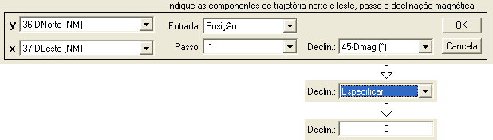
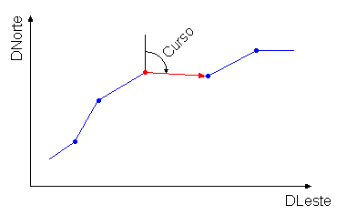
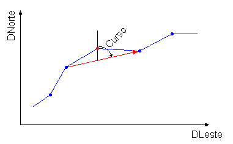
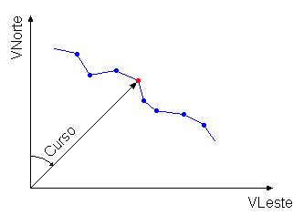
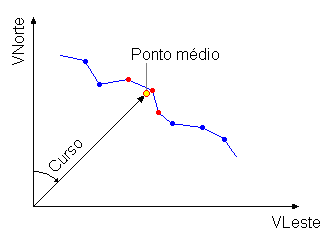

| Menu Funções |
|
Obtenção
de Curso
Essa função
permite obter o curso (direção da trajetória no
solo) a partir de dados de posição ou de velocidade nos eixos Norte e
Leste
verdadeiro ou de coordenadas geográficas (latitude e longitude).
Clique no menu “Funções ►
Obtenção de curso” na Barra de Ferramentas.
A Caixa de
Diálogo solicitará que o usuário indique os
parâmetros para a operação:

● No campo
“Entrada”, indique o tipo de parâmetros que
serão usados como dados de entrada. As opções são “Posição”,
“Velocidade” e
“Latitude/Longitude”.
● Nos campos “x” e “y”,
indique os parâmetros de entrada desejados, conforme a seleção do campo
“Entrada”. Os parâmetros de posição ou velocidade devem estar no
sistema
terrestre para a correta obtenção do curso. Para entrada do tipo
Latitude/Longitude,
as coordenadas devem estar no sistema WGS-84.
● No campo
“Passo”, indique o passo para cômputo do
curso magnético (número de observações ao redor de cada ponto). As
opções são:
1, 2, 4, 6, 8, 10 e 20. O aumento do passo tende a amortecer o ruído
dos dados
de entrada.
● No campo “Declin.”, indique a declinação do campo magnético terrestre (em graus, positivo para Leste) para cômputo do curso magnético. O campo pode ser preenchido de duas formas:
- Caso a declinação magnética seja um parâmetro, indique o parâmetro correspondente na lista;
- Caso deseje utilizar um valor médio conhecido, indique a opção
"Especificar" (1ª opção na lista de parâmetros). A lista se tornará um
campo para inserção do valor numérico. Insira 0
para
curso verdadeiro.
Ao pressionar
“OK”, o R_DAT analisará os
parâmetros “y” e “x”.
Caso algum dos
parâmetros de entrada contenha pontos
inválidos (NaN),
o R_DAT interpolará
linearmente esses pontos, realizará a operação e reatribuirá
NaN aos pontos
correspondentes no parâmetro de saída.
O R_DAT
apresentará temporariamente o resultado no gráfico
principal. Para confirmar, dê um nome adequado ao parâmetro na Caixa de
Diálogo
e clique “OK”. Para cancelar e descartar o novo parâmetro, clique
“Cancela”.

Após definir o
nome e pressionar “OK”, o novo parâmetro será
acrescentado às matrizes de trabalho antes do parâmetro “No.OBS.”.
| Nota: Certifique-se
que os parâmetros de entrada não contenham ruído, pois o resultado
poderá ficar incoerente. O aumento do passo pode amortecer os ruídos,
mas não os elimina completamente. |
Lógica de Operação
1° Caso: Posição
Dado um par de
parâmetros DE e DN, que expressam as distâncias
no sistema terrestre com relação a um ponto fixo no solo, o curso será
dado
pelo ângulo formado pelo vetor deslocamento e o Norte verdadeiro. O
número de
observações que define o tamanho do vetor deslocamento é dado pelo
passo
escolhido. O aumento do passo tende a amortecer o ruído dos dados de
entrada.
 
2° Caso:
Velocidade
Dado um par de
parâmetros VE e VN, que expressam as
velocidades nos eixos Norte e Leste do sistema terrestre móvel, o curso
será dado
pelo ângulo formado pela velocidade resultante e o Norte verdadeiro. O
passo
define o número de observações ao redor do ponto para obtenção do curso
médio.
O aumento do passo tende a amortecer o ruído dos dados de entrada.
Passo = 1: Passo = 2:
 
3° Caso:
Latitude/Longitude
Os parâmetros
de latitude e longitude são inicialmente
convertidos para distâncias nos eixos Norte e Leste
verdadeiros com relação ao ponto médio da trajetória e a
operação é
realizada conforme o 1º Caso.
| |
Integração
de trajetória |
Declinação magnética |
|